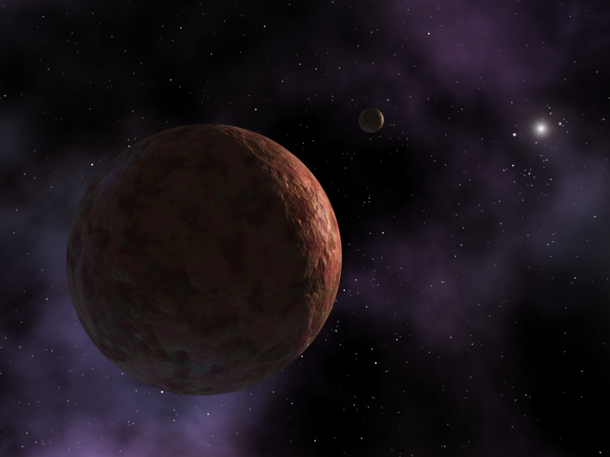

Credit: NASA/JPL-Caltech/R. Hurt (SSC)
Overview
The Oort cloud is theorised to be a cloud of billions of icy planetesimals surrounding the Sun at distances ranging from 2,000 to 200,000 AU, or roughly 0.03 to 3.2 light-years out. Its existence was proposed in 1950 by Dutch astronomer Jan Oort, who suggested it replenishes the number of long-period comets entering the inner solar system, comets that are eventually consumed and destroyed as they pass close to the Sun. No direct observation of the Oort cloud has ever been made, since it lies far beyond the reach of current imaging technology.
Structure
The cloud is thought to consist of two regions: a disc-shaped inner Oort cloud, also called the Hills cloud, aligned roughly with the plane of the solar system, and a spherical outer Oort cloud surrounding it. The inner cloud spans about 2,000 to 20,000 AU and is thought to be far denser than the outer cloud, which extends from around 20,000 out to 50,000 AU or more. Both regions lie well beyond the heliosphere, the bubble of particles streaming out from the Sun, in what is technically interstellar space.
Formation
The material now in the Oort cloud is thought to have formed much closer to the Sun, as part of the same process that built the planets and smaller bodies of the solar system. Strong gravitational interactions with the young giant planets, particularly Jupiter, scattered these objects into extremely wide, elongated orbits, which were then reshaped over billions of years by the pull of passing stars and the gravity of the wider galaxy into the long-lived orbits seen today. Simulations suggest the cloud's mass peaked roughly 800 million years after the solar system formed, before losses began to outpace the supply of new material.
Comets
The Oort cloud is thought to be the main source of long-period comets, those with orbits lasting thousands of years or more, as well as some Halley-type comets that swing by more frequently despite originating from so far out. Comets are gradually nudged out of the cloud by the gravitational pull of the wider Milky Way, known as the galactic tide, as well as by the occasional close pass of another star. Because the Sun's gravity is so weak that far out, even small nudges are enough to send a comet falling in toward the inner solar system.
Sedna and similar objects
Several distant objects have been proposed as members of the inner Oort cloud rather than the Kuiper belt, since their orbits reach farther out than typical Kuiper belt objects while still coming close enough to the Sun to be detected. Sedna, discovered in 2004, is the most well-known of these, with a highly eccentric orbit that never brings it closer than about 76 AU from the Sun. A similar object, 2012 VP113, has a slightly larger closest approach than Sedna but an aphelion only about half as far, and other candidates such as 2010 GB174 and 474640 Alicanto share these extreme, elongated orbits that seem to keep them detached from the gravitational influence of the known planets.
Exploration
No spacecraft has ever come close to reaching the Oort cloud. Voyager 1, the most distant human-made object, is not expected to reach the Oort cloud's inner edge for about 300 years, and would take roughly 30,000 years to pass all the way through it. A few mission concepts have been proposed to search for Oort cloud objects from a distance, including a photometer-based observatory that would look for icy bodies passing in front of far-off stars, but none have yet been built.